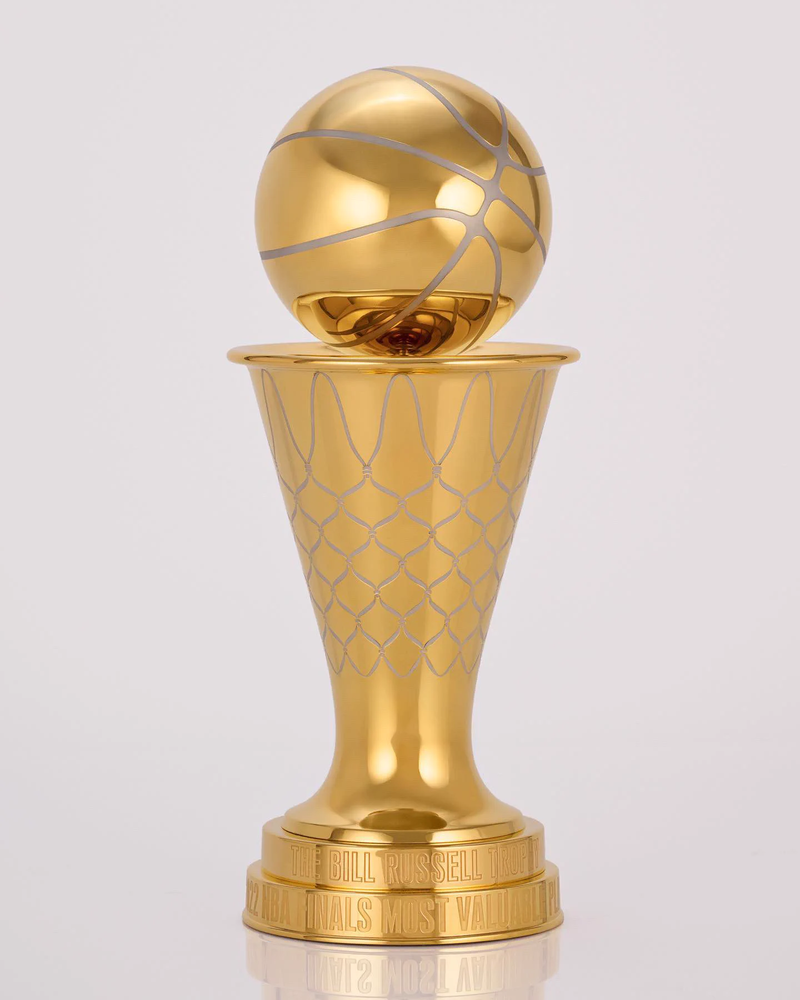

The Pioneer and Mikan Era (1946-1956)
The birth of proffesional basketball, merging the BAA and NBL to form the NBA and early rules adaptations like the shot clock. The most dominant team of this era was the Minneapolis Lakers (Now los angeles lakers) who won 5 tittles. The most dominant players were: George Mikan (the leagues first true superstar center), Bob Petit, Dolph Schayes, Paul Arizin, Slater Martin. Bob Petit one the first NBA MVP. This era isn't taken very seriously today because people believe that this was just a time of when people saw proffesional basketball as a part time thing.
The Bill Russel and Celtics Dynasty (1956-1969)
Total domination by the boston celtics alongside historical individual statistical explosions. The boston celtics led by the defensive/rebounding titan bill russel won 11 championships is 13 seasons (1957, 1959-1966, 1968, 1969), including 8 consecutive tittles. The st. Louis hawks and philadelphia 76ers briefly interrupted the celtics dominance. The major award winners for this era were:
MVPS
- Bill Russel(5x)
- Wilt chamberlin(4x)
- Bob cousy
- Bob petit
- Oscar Robertson
- Wes Unseld
Major additions in this era was the addition of the finals MVP in 1969 with jerry west winning this individual award (Only player in NBA history to win the finals MVP while on the losing team)

The Parity and Merger Era (1969-1979)
This era was defined by the NBA and ABA merger and its high parity (8 different champions in 10years). The dominant teams of this era were the New york knicks who won two championships (1970, 1973), Boston celtics who also won two championships (1974, 1976). Other championship winners were the Los angeles lakers, Milwaukee bucks, Golden state warriors, Portland trailblazers, Washington Bullets, Seattle Supersonics. Dominant players were Kareem abdul-jabber, Julius "Dr.J" Erving, Bill walton, Willis reed, Dave cowens, Elvin hayes, Walt frazier.
Major Award Winners
MVPS
- Kareem Abdul-Jabber(5x)
- Willis Reed
- Dave Cowens
- Bob Mcadoo
- Bill Walton
- Moses Malone
Finals MVPS
- Willis Reed(2x)
- Kareem Abdul-Jabber
- Jo Jo White
- Bill Walton
- Dennis Johnson
The Magic vs Bird and "Showtime" Golden Era
The defining theme of this era was the Magic Johnson-Larry Bird rivalry. This revitalizes popular culture and launches the modern global era of the NBA. The dominant teams of this era were the Los angeles lakers ("Showtime") who won 5 championships (1980, 1982, 1985, 1987, 1988), Boston celtics who won 3 championships (1981, 1984, 1986), Detroit pistons ("Bad Boys") won back to back championships in 1989 and 1990. The most dominant players of this era were Earvin "Magic" Johnson, Larry Bird, Kareem Abdul-Jabber, Moses Malone, Isiah Thomas, Dominique Wilkins, Charles Barkley. The DPOY (Defensive Player of the Year) was also Introduced in 1982.
Major Award Winners
MVPS
- Larry Bird (3x consecutive)
- Magic Johnson (3x)
- Moses malone (2x)
- Kareem Abdul-Jabber
- Julius Erving
- Micheal jordan
DPOY
- Sidney Moncrief (First winner)
- Mark Eaton
- Micheal cooper
- Micheal Jordan
- Dennis Rodman
The Micheal Jordan and Chicago Bulls Dynasty
This era's defining theme was global expansion, slow pacing, and total mastery by Micheal Jordan's chicago bulls. The dominant teams od this era were: the chicago bulls who won 6 championships with two separate 3-peats (1991-1993, 1996-1998), Houston rockets who won back to back championships in 1994, 1995. Most dominant players of this era were Micheal Jordan, Scottie Pippen, Hakeem Olajuan, Karl Malone, Charles Barkley, David Robinson, Patrick Ewing, Shaquille O'neal.
Major Award Winners
MVPs
- Micheal Jordan (4x)
- Charles Barkley
- Hakeem Olajwon
- David Robinson
- Karl Malone
DPOY
- Hakeem Olajuwon (2x)
- Dikembe Mutombo
- Dennis Rodman
- Gary Payton (Only PG to win the award)
The post-Jordan and ISO Defense Era
The defining theme for this era was defensive grinding, isolation play styles, slow tempo, illegal defense rule changes and dominant big men. Dominant teams of this era were the los angeles lakers who were 3-peat champions from 2000-2002, san antonio spurs won 4 championships (1999, 2003, 2005, 2007), Detroit Pistons 2004 champions, Miami heat 2006 champions. Dominant players of this era were: Shaquille O'Neal, Kobe Bryant, Tim Duncan, Allen Iverson, Kevin Garnett, Dirk Nowitzki.
Major Award Winners
MVPs
- Tim Duncan (2x consecutive)
- Steve Nash (2x consecutive)
- Shaquille O'Neal
- Allen Iverson
- Kevin Garnett
- Dirk Nowitzki
DPOY
- Ben Wallace (4x)
- Dikembe Mutombo
- Dwight Howard
- Marcus Camby
The Super Team Era (2007-2026)
This era was defined by high-profile star movements, free agency pairings, positionless basketball transitions and dynamic permeter scoring. Most dominant teams of this era were the miami heat whon 2 back to back championships in 2012 and 2013, Los angeles who won back to back in 2009, 2010, Boston celtics who were 2008 champions, dallas mavericks who were 2011 champions, san antonio spurs who were 2014 champions and golden state warriors who 4 championships in 2015, 2017, 2018 and 2022. Dominant players of this era were Lebron James, Kobe bryant, Dwyane Wade, Dwight Howard, Dirk Nowitzki, Kawhi leonard, Steph Curry and James Harden.
Major Award Winners
MVPs
- Lebron Jmaes (4x)
- Derrick Rose
- Dirk Nowitzki
- Kobe Bryant
- Steph Curry (2x)
- Kevin durant
- Russel westbrook
- James Harden
- Giannis Antentokumpo (2x)
- Nikola Jokic(3x)
- Joel Embid
- Shai Gigeous-Alexander(2x)
DPOY
- Marcus Camby
- Kevin Garnett
- Dwight Howard(3x)
- Tyson Chandler
- Marc Gasol
- Joakim Noah
- Kawhi Leonard(2x)
- Draymond Green
- Rudy Gobert(4x)
- Giannis Antetokumpo
- Marcus Smart
- Jaren Jackson Jr
- Evan Mobley
- Victor Wembanyama